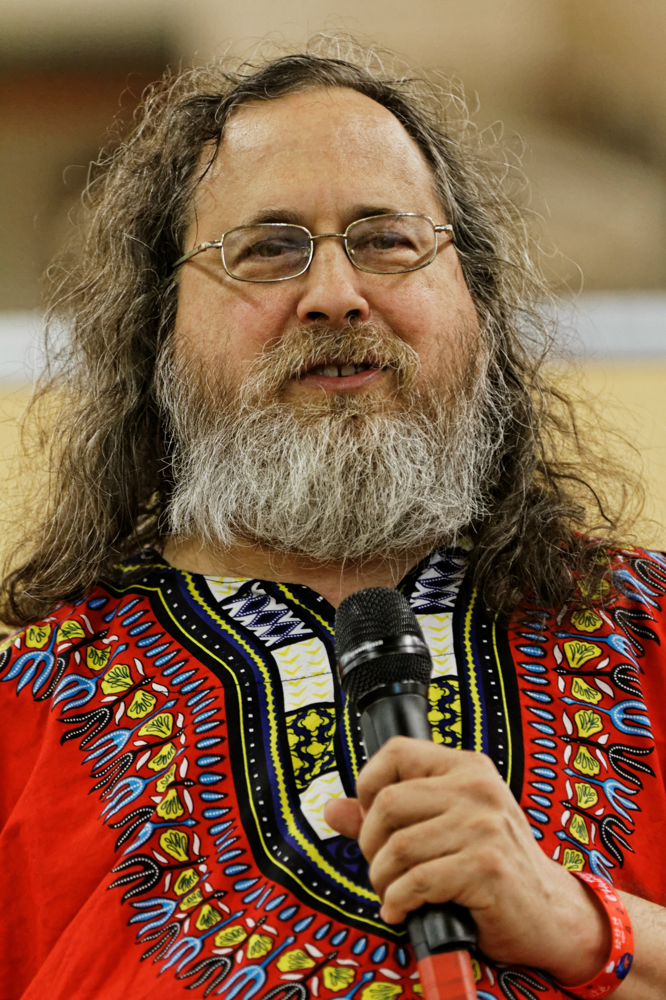

Day 1
Table of Contents
- 1. Day 1: Theory and History
- 1.1. Free and Open Source:
- 1.2. Richard Stallman:
- 1.3. GNU and GNU Utilities:
- 1.4. Released under GPL License:
- 1.5. GNU - GNU is Not Unix:
- 1.6. First Release: 10,239 Lines of Code:
- 1.7. GNU Utilities + Linux Kernel -> GNU/Linux OS:
- 1.8. What is Kernel? (Method of Abstraction):
- 1.9. Kernel Architecture (Monolithic and Micro Kernel):
- 1.10. User Space Vs Kernel Space:
- 1.11. History of Free Software Movement:
- 1.12. History of Linux Kernel and Linus Torvalds:
- 1.13. Different Fields Where Linux is Used:
- 1.14. Flavors of Linux:
- 1.15. Choosing the Right Distro:
- 1.16. GUI vs CLI:
- 2. Day1: Linux Installation on Oracle Virtual Box:
1. Day 1: Theory and History
1.1. Free and Open Source:
Free and Open Source refers to software that is not only available for free but also provides access to its source code. Users can view, modify, and distribute the code, fostering a collaborative and transparent approach to software development.
1.2. Richard Stallman:
Richard Stallman is the founder of the Free Software Foundation and a prominent figure in the free software movement. His advocacy revolves around the importance of users' freedom to control and modify the software they use. 
1.3. GNU and GNU Utilities:
GNU is a project initiated by Richard Stallman to develop a Unix-like operating system composed entirely of free software. GNU Utilities are essential tools developed as part of this project, contributing to the creation of a complete operating system.
1.4. Released under GPL License:
The GPL (General Public License) is a widely used open-source software license. Software released under the GPL allows users to freely use, modify, and distribute the code, ensuring that derivative works also remain open source.
1.5. GNU - GNU is Not Unix:
GNU is a recursive acronym emphasizing the project's goal of creating a Unix-like system. This reflects the project's philosophy of providing a free alternative to the Unix operating system.
1.6. First Release: 10,239 Lines of Code:
The first release of the Linux kernel, version 0.01, consisted of 10,239 lines of code. This modest beginning laid the foundation for the growth of the Linux operating system.
1.7. GNU Utilities + Linux Kernel -> GNU/Linux OS:
The combination of GNU utilities and the Linux kernel forms the basis of the GNU/Linux operating system. This collaborative effort brought together essential components to create a complete and functional operating system.
1.8. What is Kernel? (Method of Abstraction):
The kernel is the core component of an operating system responsible for managing system resources, providing a layer of abstraction between hardware and software.
1.9. Kernel Architecture (Monolithic and Micro Kernel):
Kernel architecture refers to the design approach of the operating system's core. Monolithic and microkernel are two different architectures, each with its own set of advantages and trade-offs.
1.10. User Space Vs Kernel Space:
User space and kernel space represent two distinct levels of privilege in an operating system. User-level processes interact with applications, while kernel-level processes manage system resources at a lower level.
1.11. History of Free Software Movement:
The free software movement has evolved over time, advocating for the freedom of users to run, modify, and distribute software. Richard Stallman's initiatives and the creation of the Free Software Foundation have played key roles in this movement.
1.12. History of Linux Kernel and Linus Torvalds:
The history of the Linux kernel involves significant milestones in its development, with Linus Torvalds as the creator. Understanding this history provides insights into the growth of the Linux operating system.
1.12.1. Linux Kernel Version 0.01 (Sept 1991):
Linus Torvalds released the initial version of the Linux kernel in September 1991. This marked the beginning of the development of the Linux operating system.
1.13. Different Fields Where Linux is Used:
Linux finds applications in various industries, including servers, embedded systems, mobile devices, and supercomputers. Its versatility and open nature contribute to its widespread use.
1.14. Flavors of Linux:
Linux distributions, or "distros," come in various flavors, each tailored to different user needs. Examples include Ubuntu, Fedora, and Debian, each with its unique features and package management systems.
1.15. Choosing the Right Distro:
Selecting a Linux distribution involves considering factors such as user experience, package availability, and system requirements. Choosing the right distro ensures a good fit for specific use cases and preferences.
1.16. GUI vs CLI:
The choice between Graphical User Interface (GUI) and Command Line Interface (CLI) depends on user preferences and the task at hand. GUIs provide a visual environment, while CLIs offer more direct and powerful control through commands.
2. Day1: Linux Installation on Oracle Virtual Box:
2.1. Step-by-Step Guide:
A step-by-step guide provides detailed instructions for installing Linux on Oracle Virtual Box, ensuring a smooth and successful installation process.
2.2. ISO File Explained:
The ISO file is a disk image containing the necessary files for installing Linux. Understanding this file is crucial for initiating the installation process on a virtual machine.
2.3. RAM, CPU, and Storage Allocation Explained:
Configuring resource allocation, including RAM, CPU, and storage, ensures optimal performance for the virtual machine running Linux on Oracle Virtual Box.
2.4. Proper Installation Done:
Completion of the Linux installation process on Oracle Virtual Box, with proper configuration and successful setup for further use.